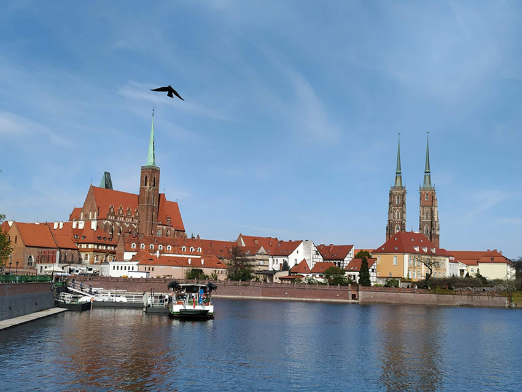

去年到波蘭出差沒多久後就遇上復活節假期，幸好有好心的同事夫妻願意收留，帶我去他們位於弗羅茨瓦夫(Wrocław，發音為vrohtz-wahv)的家中一起過節。
羅茨瓦夫位於波蘭的西南方，原本屬於德國的領土，第二次世界大戰後中美英發表波茨坦宣言，戰敗國德國需將包含此城市的部分領土割讓給波蘭，原有的德國居民被迫西遷。因此，Wrocław據說在波蘭算是一個保有德國風情、獨樹一格的城市。但究竟德國風格跟波蘭風格差異在哪裡，我問了波蘭朋友也答不出所以然，再加上我也沒去過德國，所以就姑且聽之吧。
我在波蘭的旅行喜歡以舊城市集廣場為中心，每個城市的舊城同中有異，異中有同，廣場周邊如童話般鮮豔色彩的房子，對我而言看它千遍也不厭倦。Wrocław的市集廣場相較於其他城市的顯得更寬敞舒適。廣場上矗立著一棟氣勢磅礡的哥德式建築，這是一棟有250年歷史的市政廳。市政廳的地下室有一個700多年歷史的餐廳和酒窖，可惜那天沒有營業。700年有多長呢？就是一個餐廳從元朝經歷明清兩代到今天還在的概念。
這天一早，略帶寒意的空氣因陽光燦爛而稍微有點溫暖，湛藍晴空下的露天啤酒座已經坐滿了人，同事說這裡自釀的啤酒好喝，於是我們各點了一杯啤酒加一份豬油三明治，湊進人群中熱鬧一下。或許是好友相伴，這啤酒喝起來格外甘甜。在舊城廣場的角落有兩棟建於15世紀的有名建築：漢爾賽與葛莉特，這是格林童話「糖果屋」中的兄妹的名字，據說這兩個建築看起來很像童話中在森林裡手牽手迷路的漢爾賽與葛莉特。當時是給神職人員住的，現已改為餐廳與酒吧。我只能說命名的人真的很有想像力。
這個城市最大的特色，就是走著走著會驚奇地發現小矮人的蹤跡。每個身高不會超過30公分，我到郵局寄明信片，一進去就發現準備送信的小矮人；買完冰淇淋，轉身就撞見坐在窗台上吃冰淇淋的小矮人；路過銀行門口，旁邊則有小矮人正在使用ATM提款，每次邂逅總令人會心一笑，是城市裡最搶鏡的風景。這是1980年代起源於弗羅茨瓦夫的反蘇聯活動，以小矮人為標誌，最後推翻了波蘭的共產主義政權。現在整個城市有好幾百隻小矮人散佈各個角落，各有不同的職業、表情，以一種意想不到的方式帶給遊客旅途中的歡樂與驚喜。遊客中心也有專門標示小矮人的地圖，透過尋找小矮人也是種能不自覺走遍Wrocław的旅行方式。這一天下來我估計也與近百隻小矮人歡喜相逢了。
聽說波蘭人喜歡將一些地方自比為歐洲其它城市，這點跟台灣有點像。弗羅茨瓦夫又稱「波蘭威尼斯」，因有奧德河貫穿其中，將此城分為12個大大小小的島，並有130座橋相互連結，很有水鄉威尼斯的感覺。我們繼續往北走路過位於水岸邊的弗羅茨瓦夫大學，還看到應景的小矮人教授，接著走過座堂橋(Most Tumski)來到弗羅茨瓦夫最古老的街區 - 座堂島 (Ostrow Tumski)。座堂橋又稱為「情人橋」，情侶特別喜歡到這座橋上將象徵愛情的鎖掛上，再將鑰匙丟進河裡。問世間情為何物，直叫人生死相許，天真的情侶加上浪漫的海誓山盟造就了橋上的奇景。我只是不解兩情相悅豈是這銅枷鐵鎖可以維繫的呢。在橋上我還有個無聊的發現，掛滿鐵鎖的情人橋在歐洲算是不少，但在東方國家似乎沒有，這是否與「深情而不滯於情」的東方哲學思想有關呢？與其相鎖於橋上，不如相忘於江湖，東方哲學裡的情感多了一份淡定從容與自在。
座堂島就像弗羅茨瓦夫的宗教中心，也是城市最早發源起來的地方，大約在十世紀就有了居住的遺跡。島上多有羅馬式的紅瓦白牆建築的修道院及教堂，最有名的是聖十字教堂(單尖塔)與主教座堂(雙尖塔)，雖然經過戰火的洗禮，巧奪天工的雕刻依然亮眼。我們走進教堂，三人各在不同角落安靜地坐了好一會兒，肅穆中似乎更容易沉澱思緒。
|  |
離開座堂島後，走了一小段路我再駐足回首，這個宛如童話故事小島，就像來到兒時的夢境，在藍天下安靜地懷抱著十個世紀以來的安詳，承載著一種古老的氣韻與詩情的含蓄。遠望也覺得舒心。